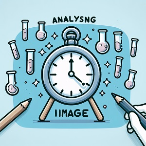

Is it a Beaker?
Using the power of Deep Neural Networks to identify beakers!
Back to Chemistry Web Apps
Have you ever asked an AI to draw a beaker? A lot of the time, it draws a flask!
Weirdly, we can also use an AI-type model to check an image to see if it is a beaker!
Drag and drop, or capture, or just upload a picture below and check to see if it's a beaker.
The Tensorflow model, MobileNet, will be used to check if it's a beaker!
MobileNet is a deep neural network that can identify different objects. Tensorflow is maintained by Google.
Drag and drop your image of (maybe) a beaker here!
or use this to find your file and upload, or to use your mobile camera:
or use this to capture an image with your device camera (desktop):
Capture image from camera.
Check if it's a beaker.
Your image will appear below.

Click here to capture
This is the work of Dr. Mauricio Cafiero and may be used widely though attribution is appreciated.